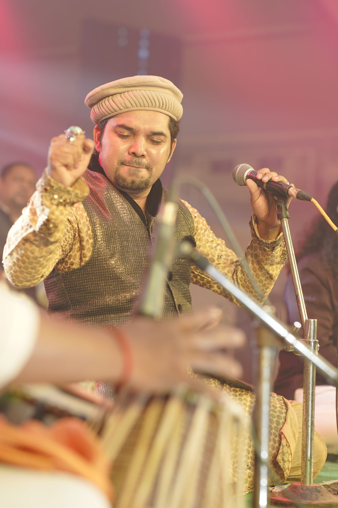

Adi Talam
8 AKSHARAS · THE DEFAULTLaghu 4 + Dhrutam 2 + Dhrutam 2
The cycle most varnams and kritis live in. If a student learns one chart by heart, it is this one.
Carnatic vocalist · Chennai
I’m Nikhil Krishnan, a Carnatic vocalist. I sing kutcheris, ragam–tanam–pallavi and temple concerts, teach a small studio of students, and lend the voice — and the tala maths — to recording sessions. Every cycle on this page is drawn as it is actually counted. Press play below and follow the hand.

The tala keeper
A tala is not a time signature you set and forget. It is a cycle the hand keeps, akshara by akshara, until it lands back on sam. Choose a cycle and follow it the way a student learns it — beat by beat, sam marked, nothing hidden.
Press Play and follow the hand: the first akshara of each cycle is sam.
About the sound: the strokes are synthesised in your browser with Web Audio — stylised mridangam-family sounds (a bass stroke, a slap, a tick, a ring) that mark each akshara and land sam with extra weight. They demonstrate the structure of the cycle; they are not recordings of a real mridangam, and no sound plays until you press Play. The syllables are the sollukattu as taught in class.
Reading the chart
An anga is a limb of the cycle. A laghu is counted on the fingers; a dhrutam is a beat and a wave of the hand; the chapu talas are counted in plain beats. Sam — akshara one — is where every phrase must resolve.
Laghu 4 + Dhrutam 2 + Dhrutam 2
The cycle most varnams and kritis live in. If a student learns one chart by heart, it is this one.
Dhrutam 2 + Laghu 4
The wave of the opening dhrutam gives it a lift Adi doesn’t have. Dikshitar set Kamalambam Bhajare in it.
3 + 4, counted in beats
The pallavi specialist’s test piece. Seven is where audiences lose the count — and where a singer proves the hand.
2 + 3, counted in beats
Short, bright, and harder to fake than eight: in five beats there is nowhere to hide a dropped akshara.
Repertoire
The core of the book. Every kriti is listed with its ragam, its talam and its composer — the tombstone data a sabha secretary actually programmes from. The full list of sixty-plus kritis travels with the press pack.
| Composition | Ragam | Talam | Composer |
|---|---|---|---|
| Vatapi GanapatimThe traditional opener | Hamsadhwani | Adi · 8 | Muthuswami Dikshitar |
| Endaro MahanubhavuluPancharatna kriti | Sri | Adi · 8 | Tyagaraja |
| Nagumomu Ganaleni | Abheri | Adi · 8 | Tyagaraja |
| Kamalambam BhajareKamalamba navavarana | Kalyani | Rupaka · 6 | Muthuswami Dikshitar |
| Brochevarevarura | Khamas | Adi · 8 | Mysore Vasudevacharya |
| Raghuvamsa Sudha | Kadanakuthuhalam | Adi · 8 | Patnam Subramania Iyer |
| Ragam–Tanam–PallaviPallavi line composed for the season; see Case 1 | Shanmukhapriya | Misra Chapu · 7 | Own pallavi |
| Thillana in DhanashriThe closer | Dhanashri | Adi · 8 | Swati Tirunal |
The register
What can be booked, in what shape, and what its current standing is. Fees for each form are published in the next section — nothing here is priced by private message.
| Form | Detail | Standing |
|---|---|---|
| Sabha kutcheri | 2½-hour main-slot concert; violin, mridangam, ghatamDecember Season and year-round | Booking · Dec 2027 |
| RTP concert | 45-minute ragam–tanam–pallavi as the centrepieceShanmukhapriya in Misra Chapu is the current pallavi | Available |
| Temple & festival concert | 90 minutes, own accompaniment teamMargazhi and Navaratri series | Available |
| Baithak | House concert, floor seating, up to 40 guestsChennai, weekends | Available |
| Recording session | Vocals and konnakol for film and studio workSee Case 2 on the Concerts page | Completed · 2026 |
| Teaching studio | 22 students across three levels, studio and onlineSee the teaching section on the About page | 2 places · Jan 2027 |
Fees
Published the way sabhas budget: a starting figure per form, and the honest list of what moves it. Quotes are confirmed in writing before any date is held.
From the sabha
“We gave Nikhil the main slot and one instruction: end with a pallavi the hall would remember. He set it in Misra Chapu — seven beats, no safety net — and the tani avartanam ran twelve minutes without a lost face in the front rows. He is rebooked for next season.”
Season dates
The Margazhi season first, then the new year. One December date is still open — it is marked, and it goes to the first confirmed enquiry.